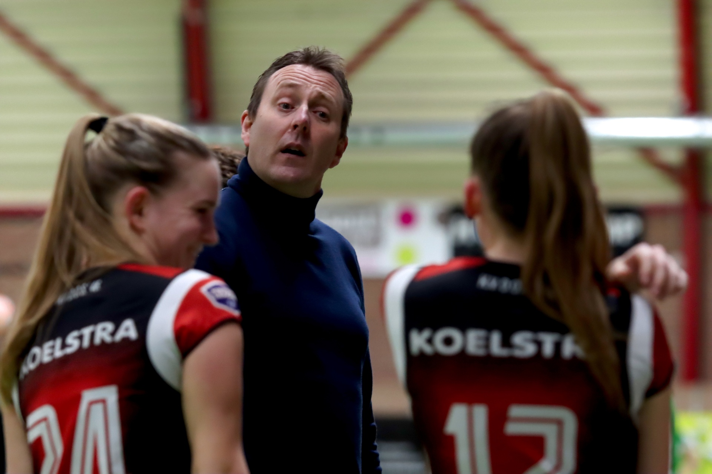
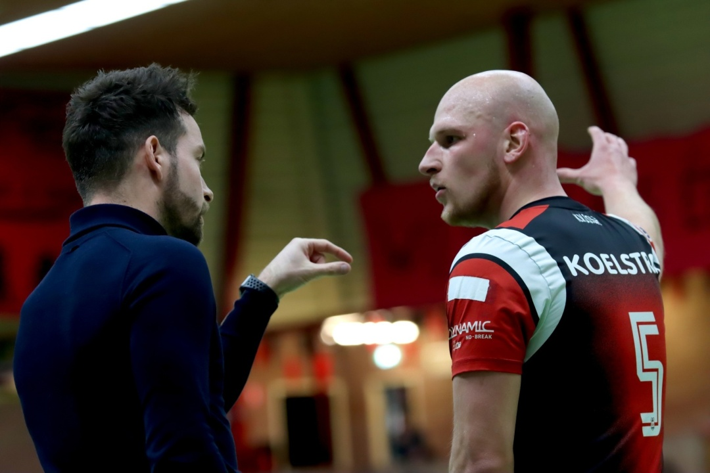

.JPG)
Geen vooruitblik zonder terugblik.
Edwin Bouman (49) was tijdens
het vorige seizoen voor het eerst
eindverantwoordelijk voor de selectie
van DOS’46. Hij stroomde in na een
van de moeilijkste perioden van
het Nijeveense korfbalbolwerk en
zette met de staf en spelers in de
Korfbal League een even fi jn als
onverwacht succes neer door de
play-off s te halen. Daarin strandde
het uiteindelijk tegen KZ/Thermo4U.
Bouman: ”Met een beetje meer geluk
hadden we het seizoen nog mooier
kunnen beëindigen. We hebben
erg geïnvesteerd in het neerzetten
van onze speelstijl en hebben jonge
spelers in kunnen passen in de
bestaande basis.”
“Als ik terugkijk naar het afgelopen
coronaseizoen, dan denk ik dat
we voor onszelf een beetje boven
verwachting hebben gepresteerd”,
zo vult Rick Wessel (31) aan. Wessel
is inmiddels voor het vierde seizoen
werkzaam als assistent-coach van het
vlaggenschip. “Met een vrij nieuwe
groep hebben we redelijk goede
resultaten geboekt, zowel in punten
als in het ontwikkelen van de spelers
en het spel. Zo hebben we al een
mooie basis voor dit seizoen gelegd.”

‘KUNNEN VERRASSEN’
Bouman kijkt met een positief
gevoel naar aankomend Korfbal
Leagueseizoen. “Het verschil tussen
het eerste en tweede is kleiner
geworden en daardoor zijn we als
selectie sterker. Topploegen als PKC/
Vertom en Fortuna/Delta Logistiek
zullen te sterk voor ons zijn, maar
verder geldt dat we kunnen verrassen
en dat we snel naar de middenmoot
willen gaan”, aldus de Bennekommer.
De Korfbal League bestaat ook dit
seizoen uit twaalf teams, verdeeld
over twee poules. Na de eerste fase
gaan de beste drie clubs per poule
naar een nieuwe poule, waarin ze
onderling uitmaken welke vier clubs
zich plaatsen voor de play-off s. De
drie minste clubs per poule strijden in
een nieuwe poule tegen degradatie.
Om het aantal clubs in het Korfbal
Leagueseizoen 2022/2023 weer naar
het gebruikelijke aantal van tien te
brengen, degraderen de nummers
12, 11 en 10 dit seizoen rechtstreeks.
De nummer 9 speelt een playdownserie tegen de verliezer van de
Hoofdklassefinale.
Bouman: “Met deze opzet van de
competitie is onze doelstelling
heel duidelijk. We willen gewoon
proberen om zo goed te spelen dat
het resultaat van de wedstrijden ons
in de eerste fase bij de eerste drie
brengt. Vervolgens begint alles weer
opnieuw en kunnen we in de poule
met de beste zes clubs kijken waar
we eindigen. Ik heb er vertrouwen in
dat we die poule halen. Dit gezien de
kwaliteit en het talent in onze selectie.
Zo hebben we ook gewoon weer vier
spelers lopen, die uitkomen voor
Talent TeamNL Korfbal. Ja, ik zie de
toekomst van DOS’46 rooskleurig.”
‘SCHERP TRAINEN’
Michel Zink (37) behaalde vorig jaar
onder begeleiding van Herman van
Gunst met DOS’46 3 zijn KT4-diploma
en is dit seizoen verantwoordelijk
voor het tweede team. “Het tweede
moet elke week het eerste het zo
moeilijk mogelijk maken. Dit doen we
door scherp te trainen en tactische
elementen goed op te pakken,
waardoor we automatisch zelf ook
gewoon beter worden.”
De inwoner van Nijverdal vindt
daarnaast het lange termijndoel
belangrijk: “Ik wil jaarlijks drie tot vier
spelers klaarstomen voor spelen
op het hoogte niveau. Ik heb in
2004 een seizoen in het tweede van
DOS’46 gespeeld - ik was niet goed
genoeg voor het eerste, maar wel van
waarde voor de selectie - en daarmee
prachtige ervaringen bij deze mooie
club mogen beleven. Ik ken dus het
belang van een selectie. Ik zie het als
mijn taak om de groep nog hechter
te maken. Ik kan de spelers van het
tweede prikkelen en ook beter maken
in het sociale deel”

TRAININGSWEEKEND
IN TSJECHIË
Na de eerste helft van de
veldcompetitie, die DOS’46 als
derde afsloot, ging de A-selectie
half oktober een weekend naar
Tsjechië. Deze dagen in Praag en
Kutná Hora stonden in het teken van
teambuilding. In het coronaseizoen
was daar geen gelegenheid voor
geweest en de coaches vinden het
belangrijk dat met name nieuwe
spelers de mogelijkheid hebben om
meer te weten te komen over hun
medespelers en de vereniging.
Wessel: “We hebben in Tsjechië
enkele wedstrijden gespeeld tegen
het Tsjechische nationale team en
hebben leuke activiteiten gedaan
zoals een fotopuzzeltocht en
spelletjes avond. Verder hebben we
op een goede manier veel met elkaar
gesproken. Ik beschouw het weekend
als heel waardevol, zowel op sportief
als sociaal vlak.”
Zink voegt daar aan toe dat hij het
weekend in zijn rol als coach nog meer
waardeert dan eerder als speler.
“Uiteraard is het allemaal ook erg
gezellig, maar ik merk dat ik nu als lid
van de staf veel meer het verschil kan
maken en dat is gaaf.” Bouman sluit
af door de vergelijking te maken met
de bemanning van een onderzeeër:
“We waren nu drie dagen geheel op
elkaar aangewezen en dan gebeuren
er mooie momenten in een groep.
We hebben in Tsjechië – bekend
terrein voor Bouman, zie kader - de
basis gelegd voor een mooi Korfbal
Leagueseizoen en zitten nu in de
fase van trainen en oefenwedstrijden
spelen. 20 november brandt de
Korfbal League los en daar hebben
we erg veel zin in. Helemaal nu er
ook weer publiek bij de Korfbal
Leagueduels mag zijn. Coachen in een
volle Eendracht is een ervaring waar
ik persoonlijk ook erg naar uitkijk.”